徳川十五代について
江戸時代は1603年に始まり、1867年まで、およそ250年続いた。将軍は、1代目から順に「家康」「秀忠」「家光」「家綱」「綱吉」「家宣」「家継」「吉宗」「家重」「家治」「家斉」「家慶」「家定」「家茂」「慶喜」と、15代まで続いた。第7代の家継が6歳という若さで急逝した時、家康から続く血は断絶した。次の将軍としては、紀州藩主であった吉宗が迎え入れられることとなった（1716年）。その吉宗の血を引く将軍はその後何代か続くことになるが、13代家定の時に再び途切れる。家定は実子がないまま死去したため、その後を紀州藩主であった家茂が継いだ。しかし、この家茂も若くして亡くなり、15代将軍は一橋徳川家より慶喜が就任した。その後、日本は激動の時代を潜り抜け、江戸幕府には終止符が打たれる。最後の将軍慶喜は、その後20世紀まで生き、大正2年（1913年）にその生涯を閉じた。
1代目
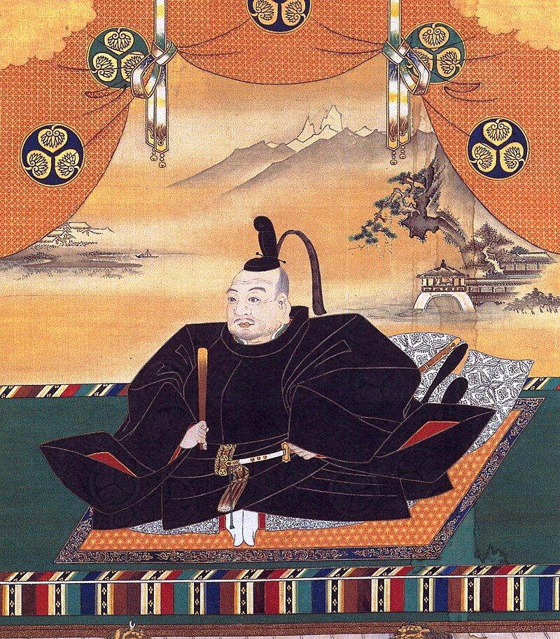
徳川家康
1543～1616
豊臣秀吉の死後、関ヶ原の戦いで石田三成に勝利し、豊臣氏に対抗しうる地位を確立した。1603年に征夷大将軍に任じられ、江戸幕府を開いた。関ヶ原の戦いの後も、領地を削減されたとはいえ豊臣氏（豊臣秀頼）は一定の力を有していたが、方広寺（京の大仏）に納める梵鐘の鐘銘を巡る一連の紛争である方広寺鐘銘事件を契機として豊臣方と開戦し（大坂の陣）、1615年に大坂夏の陣により豊臣氏を滅ぼし、全国支配を磐石なものにした。
2代目
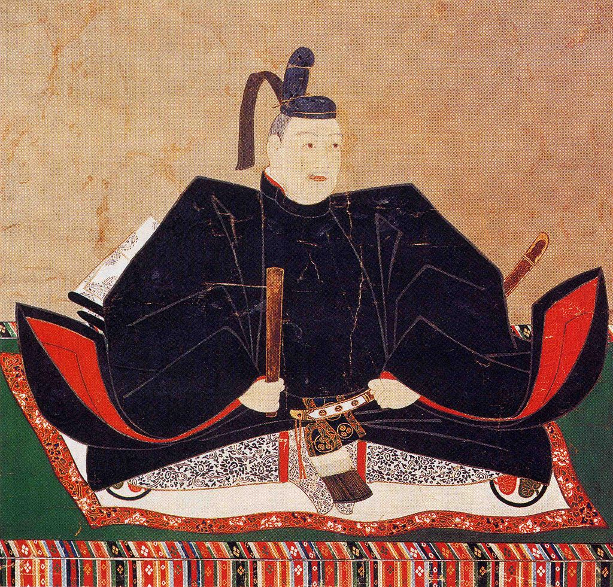
徳川秀忠
1579～1632
公家諸法度、武家諸法度などの法を整備・定着させ、江戸幕府の基礎を固めた。娘の和子を後水尾天皇に嫁がせ皇室を牽制、また紫衣事件では寺社勢力を処断し、武家政権の基礎を確立させた。家康没後は政務に意欲的に取り組んでおり、家康が没した直後の元和2年（1616年）7月、小倉藩主の細川忠興は息子・忠利に「此中、公方様御隙なく色々の御仕置仰せ付けられ候」（最近将軍様は政務に余念がない）と書き送っている。
3代目
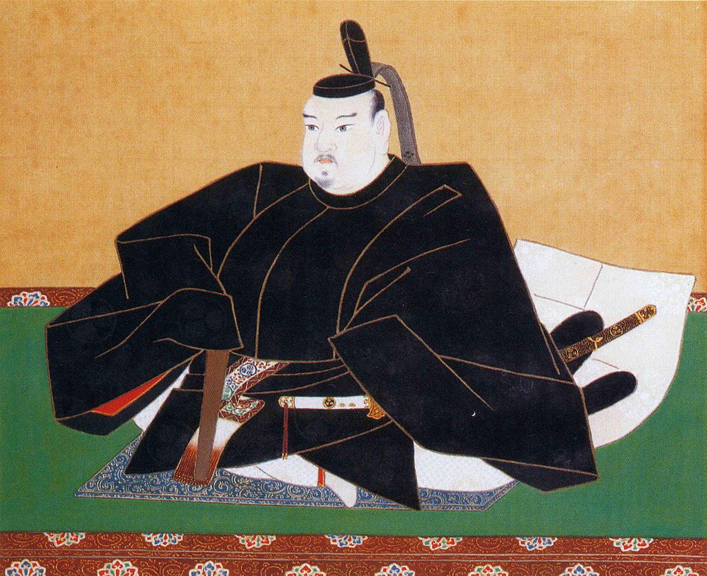
徳川家光
1604～1651
寛永9年（1632年）1月に秀忠が死去すると、将軍から公方として親政を始める。また、旗本を中心とする直轄軍の再編に着手した。同年5月には外様大名を招集し、藩内の内訌などを理由に、肥後熊本藩主・加藤忠広の改易を命じている。幕政における改革では、老中・若年寄・奉行・大目付の制を定め、現職将軍を最高権力者とする幕府機構を確立した。同年9月には外祖父の浅井長政に権中納言を贈官した。寛永12年（1635年）の武家諸法度の改訂では、大名に参勤交代を義務づける規定を加える。
4代目
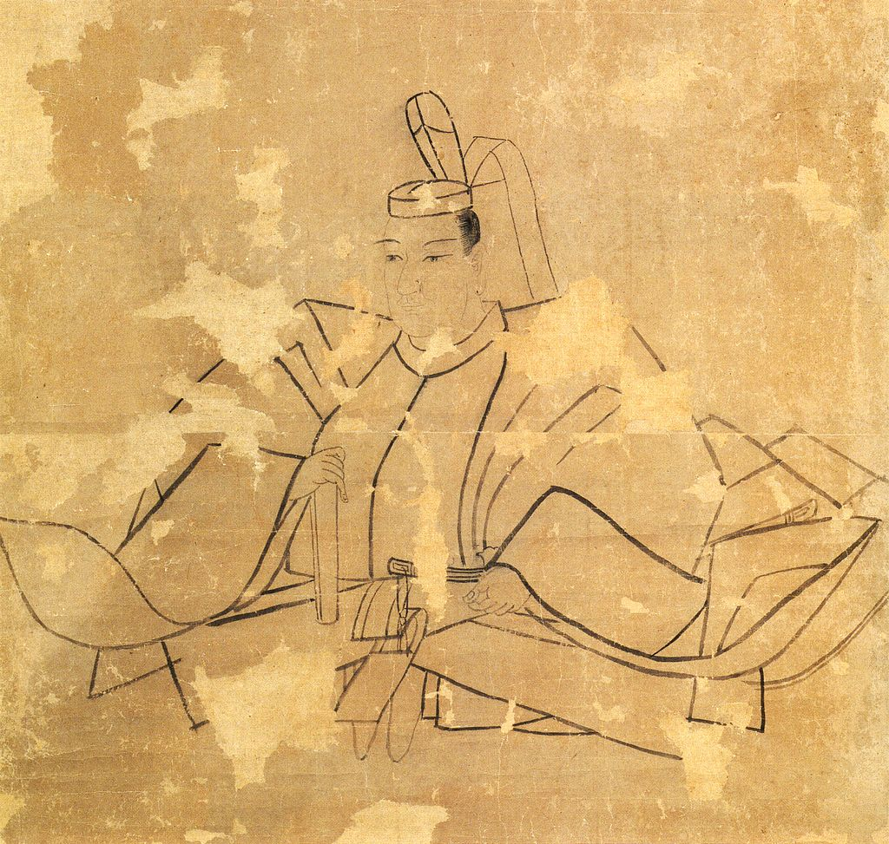
徳川家綱
1641～1680
家綱の時代には幕府機構の整備がさらに進められた。特に保科正之を主導者にして外様大名などに一定の配慮を行ない、末期養子の禁を緩和し、大名家臣から証人をとることの廃止や殉死禁止令が出されるなど、これまでの武力に頼った武断政治から文治政治への政策切り替えが行われた。
5代目
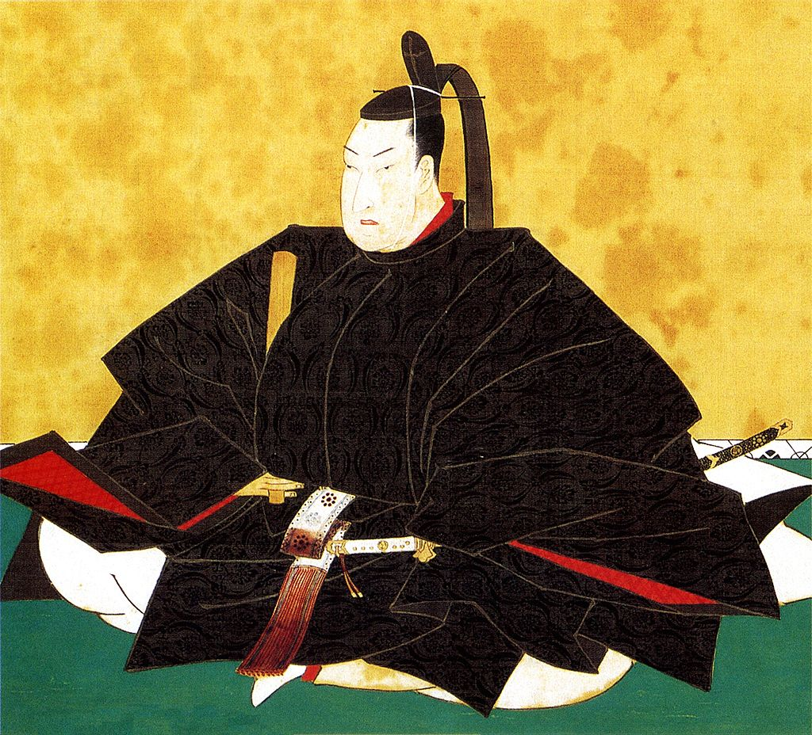
徳川綱吉
1646～1709
生類憐みの令をはじめとする悪政により、綱吉は否定的な評価がなされるが一方で、近松門左衛門、井原西鶴、松尾芭蕉といった文化人を生んだ元禄期であり、好景気の時代だったことから優れた経済政策を執っていたという評価もある。また、前期における幕政刷新の試みはある程度成功しており、享保の改革を行った8代将軍徳川吉宗も綱吉の定めた天和令をそのまま「武家諸法度」として採用するなど、その施政には綱吉前期の治世を範とした政策が多いと指摘されている。
6代目
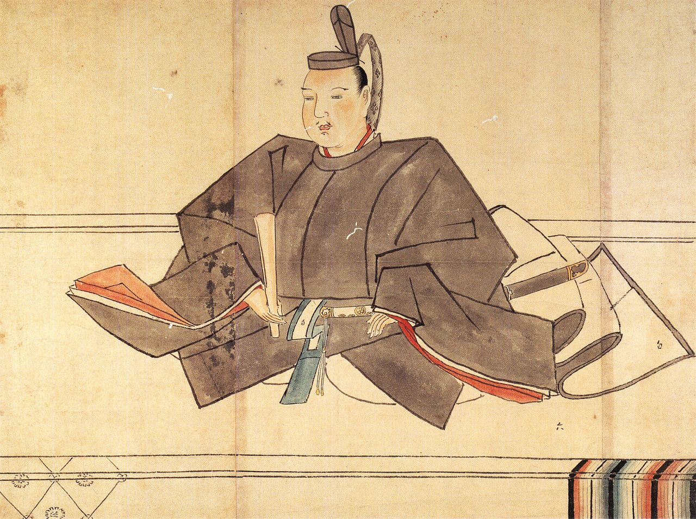
徳川家宣
1662～1712
宝永6年（1709年）、綱吉が亡くなり、48歳で第6代将軍に就任すると、宝永通宝の流通と酒税、生類憐れみの令の一部を順次廃止した。さらに、柳沢吉保の辞職により側用人に間部詮房、学者として新井白石らを登用して、綱吉時代から始まった文治政治を推進し、琉球や李氏朝鮮との外交や宝永令の発布、新井白石による正徳金銀の発行などの財政改革を試みた。
7代目
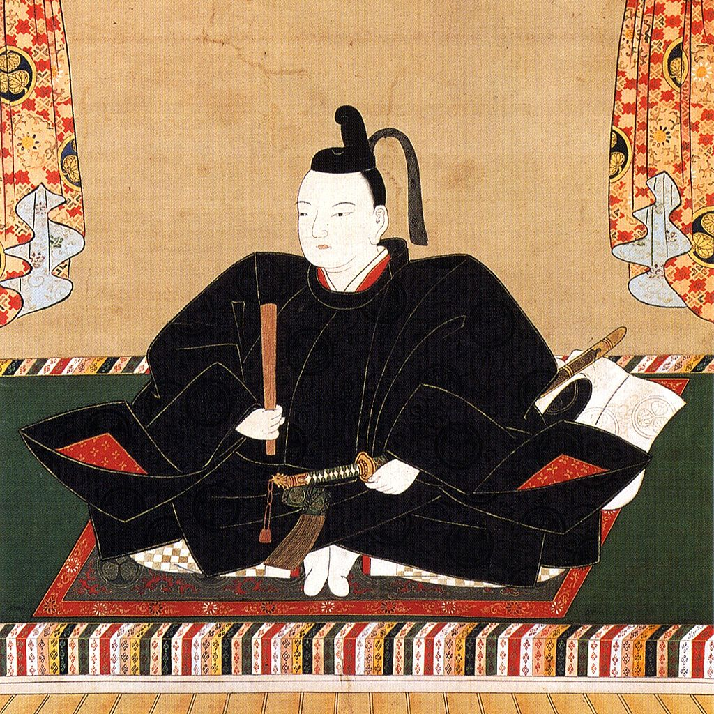
徳川家継
1709～1716
家継は詮房や白石とともに、家宣の遺志を継ぎ、正徳の改革を続行した。この間、幕政は幼少の家継に代わって生母・月光院や側用人の詮房、顧問格だった白石らが主導している。正徳6年（1716年）4月30日、死去した。8歳（満6歳没）。増上寺に葬られた。死因は風邪の悪化による急性肺炎説が有力である。
8代目
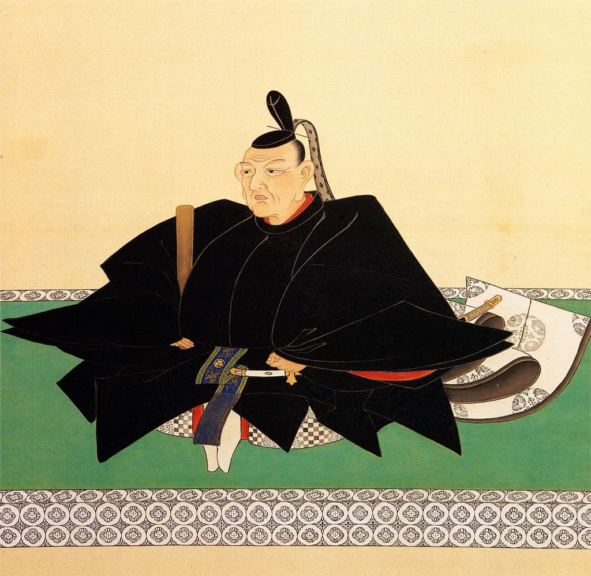
徳川吉宗
1684～1751
享保元年（1716年）に将軍徳川家継が8歳で早世し、将軍家の血筋（徳川家康の三男秀忠の男系）が絶えた後を受け、御三家の中から家康との世代的な近さを理由に、御三家筆頭の尾張家を抑えて第8代征夷大将軍に就任した。将軍に就任すると、第6代将軍・徳川家宣の代からの側用人間部詮房や新井白石を罷免したが、新たに御側御用取次という側用人に近い役職を設け、事実上の側用人政治を継続した。
9代目
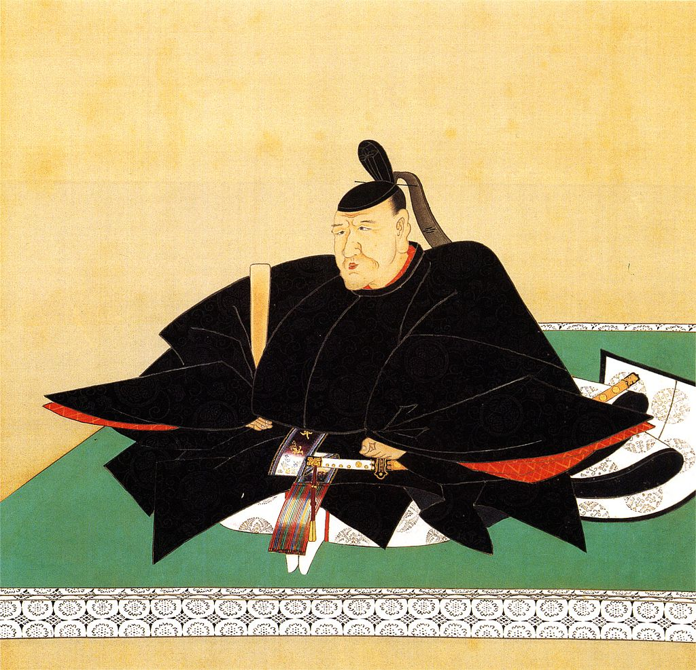
徳川家重
1712～1761
家重の時代は吉宗の推進した享保の改革の遺産があり、綱吉が創設した勘定吟味役を充実させ、現在の会計検査院に近い制度の確立、幕府各部局の予算制度導入、宝暦の勝手造り令で酒造統制の規制緩和など、幾つかの独自の経済政策を行った。しかし負の遺産も背負うこととなり、享保の改革による増税策により一揆が続発し、社会不安が増していった。
10代目
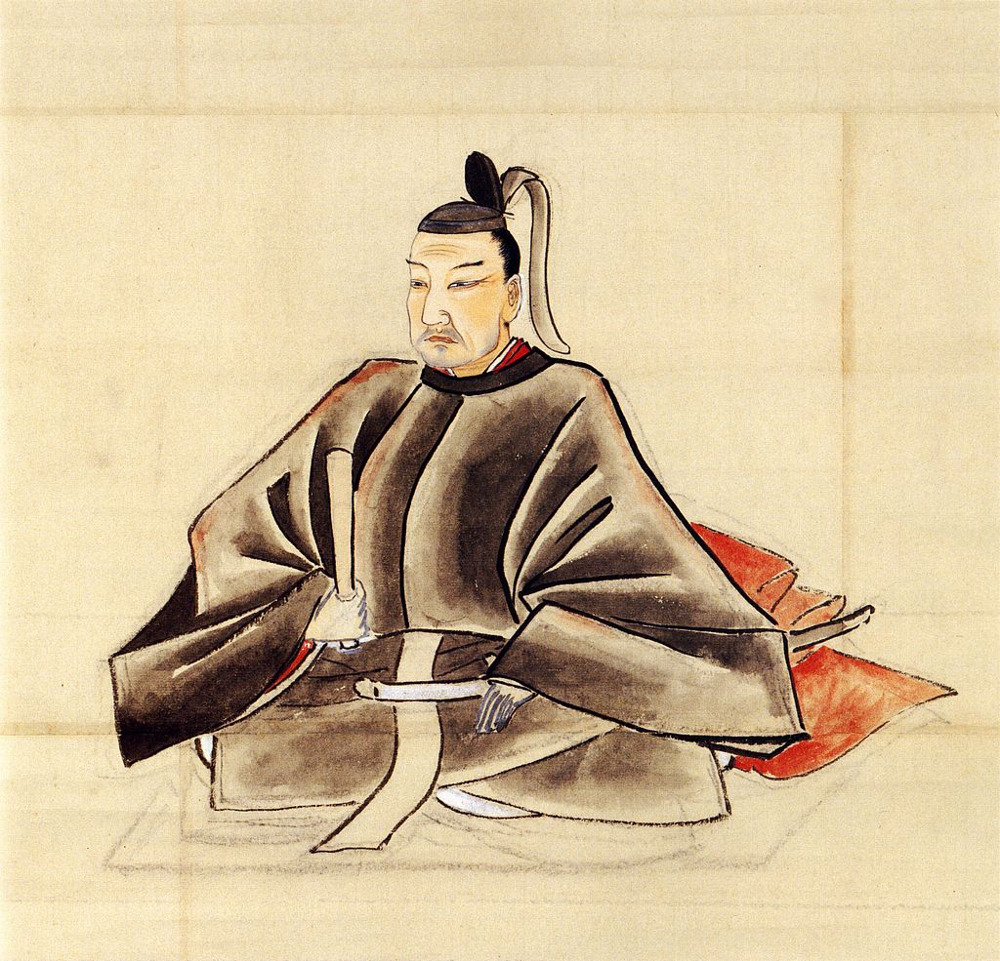
徳川家治
1737～1786
幕政は家臣に任せ、趣味に没頭していたが、その趣味の分野では高い能力を示している。そのため、将軍として主体的に権力の行使を行わなかったことについて、ただ単にやる気がなかっただけとする説もある。一方、「田沼意次を重用した事自体が英断である」として、高く評価する意見もある。意次が大胆な重商主義政策を推進し得たのも家治の後援あってのことである。
11代目
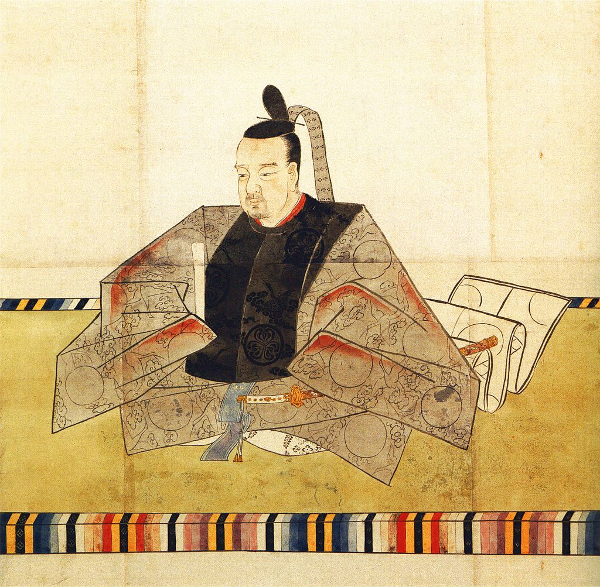
徳川家斉
1773～1841
将軍に就任すると、家治時代に権勢を振るった田沼意次を罷免し、代わって徳川御三家から推挙された陸奥白河藩主で名君の誉れ高かった松平定信を老中首座に任命した。これは家斉が若年のため、家斉と共に第11代将軍に目されていた定信を御三家が立てて、家斉が成長するまでの代繋ぎにしようとしたのである。定信が主導した政策を寛政の改革と呼ぶ。
12代目
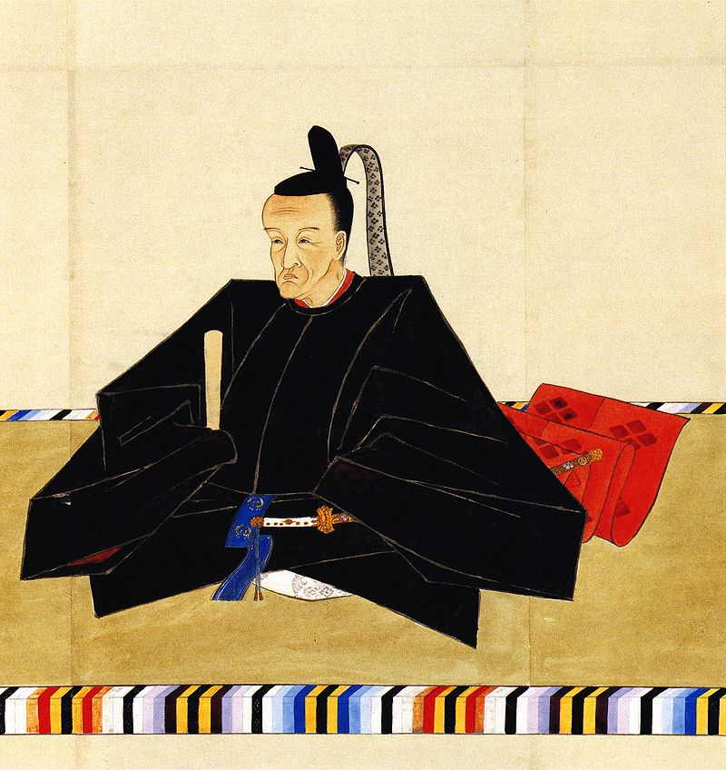
徳川家慶
1793～1853
老中首座・水野忠邦を重用し、家斉派を粛清して天保の改革を行わせた。忠邦は幕府財政再建に乗り出し、諸改革を打ち出したが、徹底的な奢侈の取締りと緊縮財政政策を採用したため世間に支持されなかった。また家慶政権期には言論統制も行なわれ、高野長英や渡辺崋山などの開明的な蘭学者を弾圧した（蛮社の獄）。
13代目
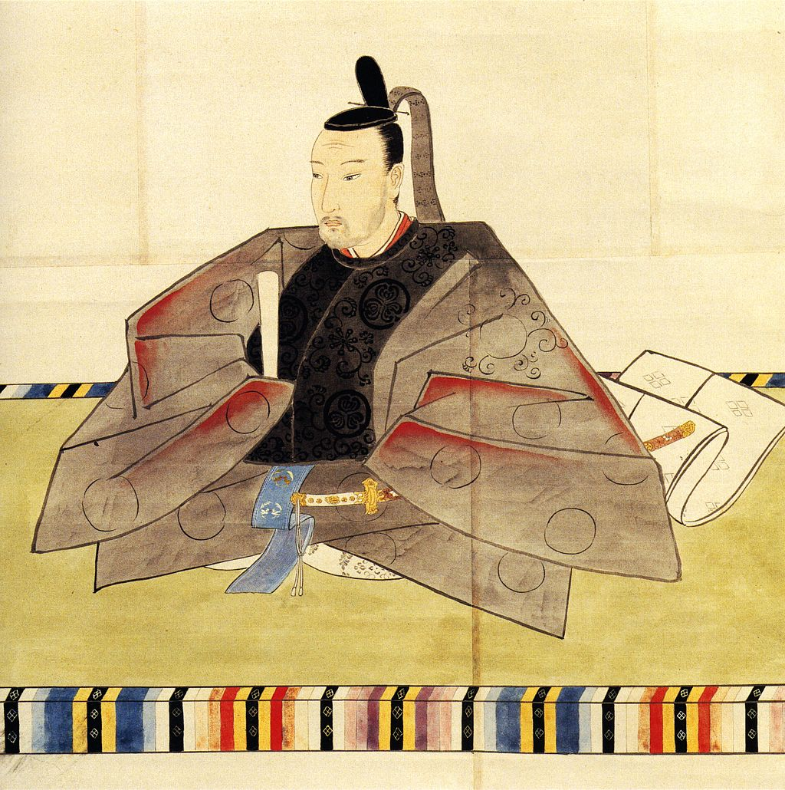
徳川家定
1824～1858
嘉永7年（1854年）、ペリーが7隻の艦隊を率いて再来日すると、幕府は日米和親条約に調印した。家定は元々健康が優れなかったが、将軍就任以後はさらに悪化し、廃人同様になったとまで言われている。このため、幕政は老中・阿部正弘によって主導され、安政4年（1857年）に正弘が死去すると、その後は老中・堀田正睦によって主導された。
14代目
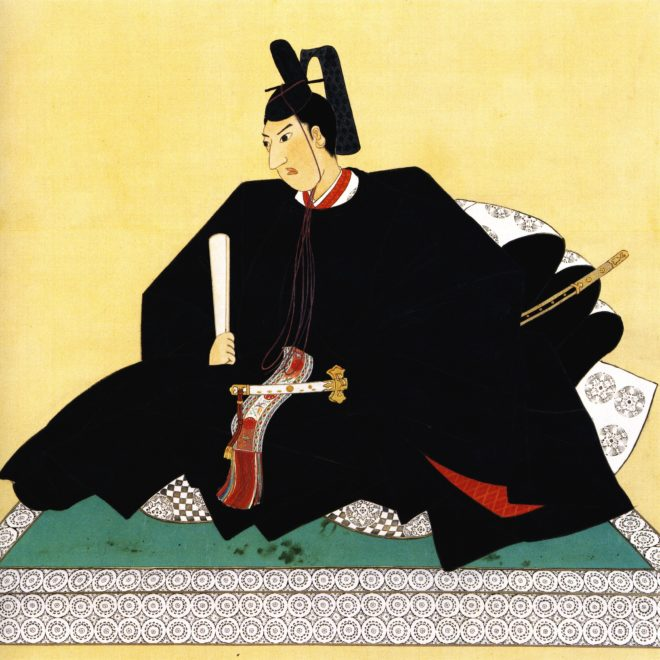
徳川家茂
1846～1866
第13代将軍・徳川家定の後継者問題が持ち上がった際、家定の従弟にあたる慶福（後の家茂）は徳川家一門の中で将軍家に最も近い血筋であることを根拠に、大老で譜代筆頭の彦根藩主井伊直弼ら南紀派の支持を受けて13歳で第14代将軍となった。慶応2年（1866年）、第2次長州征伐の途上、家茂は大坂城で病に倒れた。この知らせを聞いた天皇は、数々の医師を大坂へ派遣し、その治療に当たらせた。しかしその甲斐なく、同年7月20日に薨去した。享年21（満20歳没）。
15代目
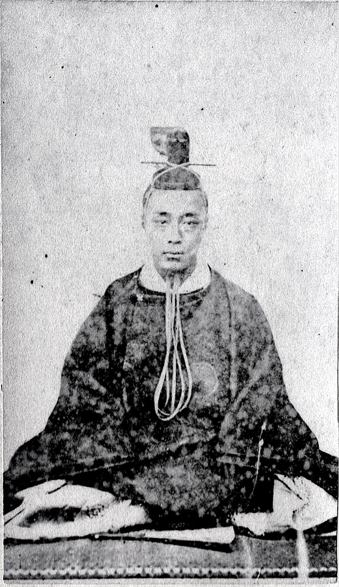
徳川慶喜
1837～1913
家茂の後継として、老中の板倉勝静、小笠原長行は江戸の異論を抑えて慶喜を次期将軍に推した。慶喜はこれを固辞し、8月20日に徳川宗家は相続したものの、将軍職就任は拒み続け、12月5日（1867年1月10日）に二条城において将軍宣下を受けてようやく将軍に就任した。この頃の慶喜ははっきりと開国を指向するようになっており、将軍職就任の受諾は開国体制への本格的な移行を視野に入れたものであった。